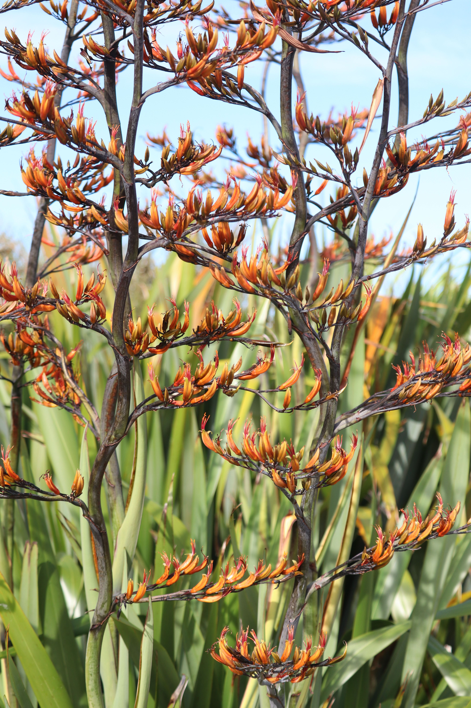
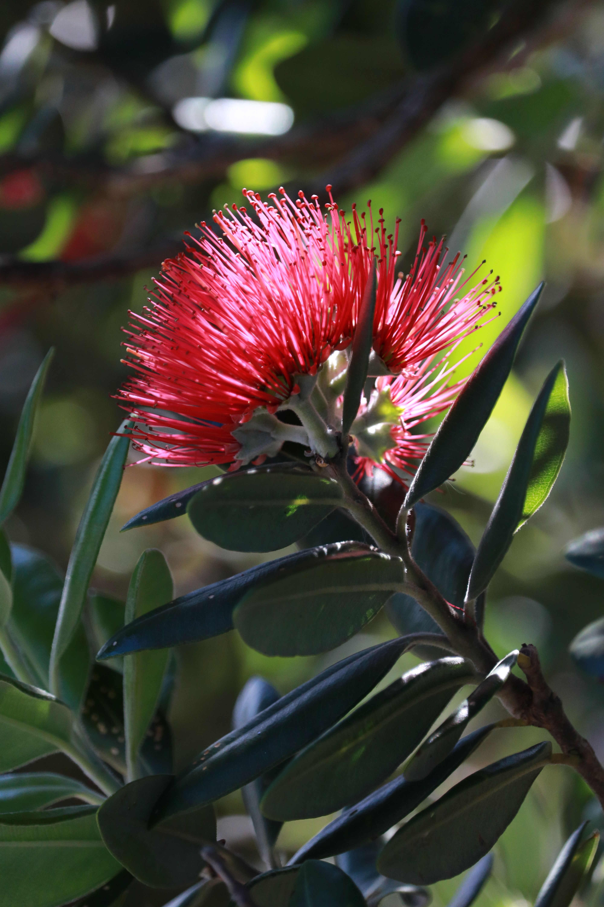
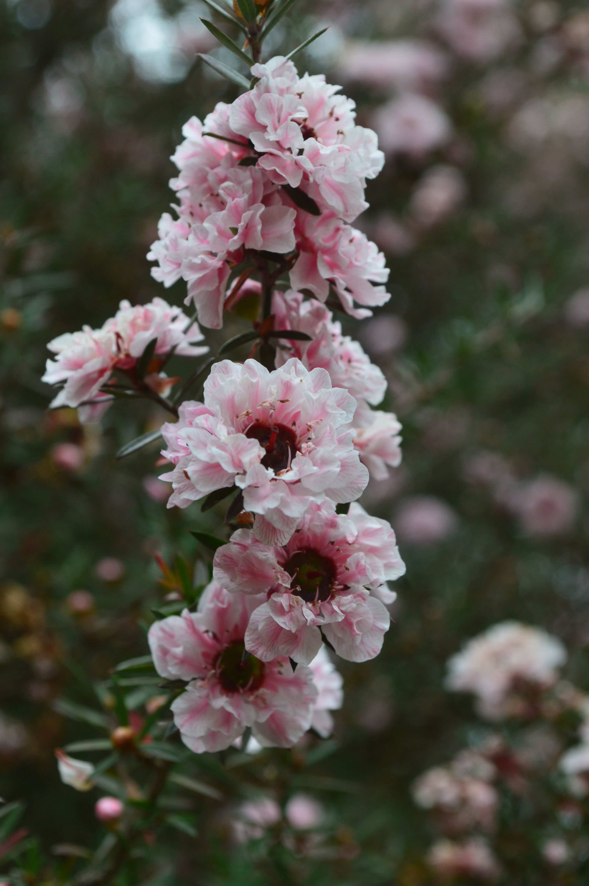
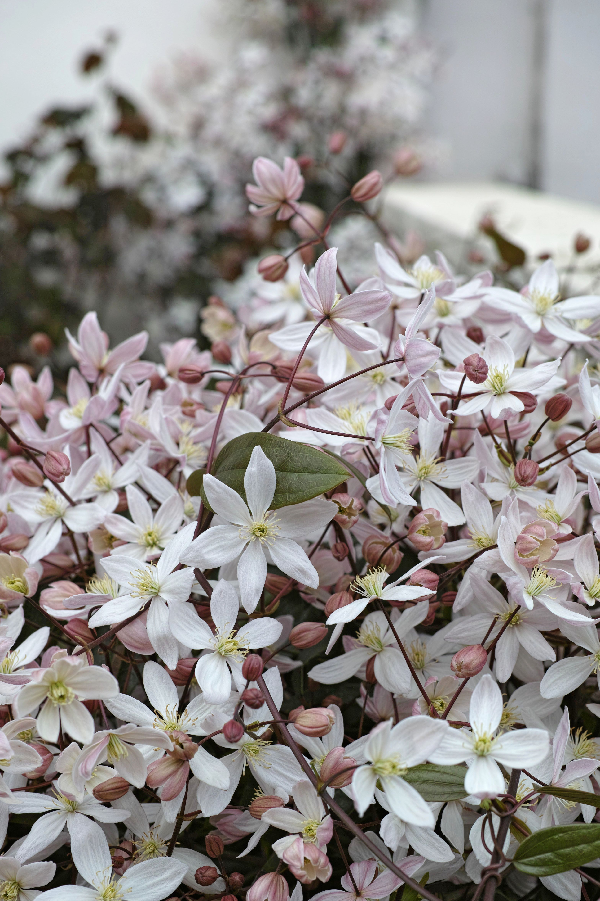

Plants to spot in NZ
| Image | Plant Name | Description | Best Time to See |
|---|---|---|---|
 |
Kowhai | Drooping bright yellow flowers that look like pea pods and small leaves made of many tiny leaflets. However Kowhai flowers in a unique way, with the flowers appearing before the leaves. | August to October |
 |
Harakeke (New Zealand Flax) | Harakeke is a large, hardy evergreen plant featuring long, tough, sword-shaped leaves that grow upward in distinct, fan-like clumps. These strap-like leaves can reach up to three metres in length and vary in color from deep green and blue-grey to striking bronze or variegated stripes. During spring and summer, the plant shoots up massive flower stalks—often twice the height of the leaves—which erupt with heavy clusters of tubular red, orange, or yellow flowers that naturally attract local birds. | October to January |
 |
Pohutukawa | Pōhutukawa grow up to 25 metres (82 ft) high, with a spreading, dome-like form. They usually grow as a multi-trunked spreading tree. Their trunks and branches are sometimes festooned with matted, fibrous aerial roots. The oblong, leathery leaves are covered in dense white hairs underneath. When in season the flowers are vibrant red and are structured as a bunch of stamens sticking out of the tree. | November to January |
 |
Manuka | Small, white, bell-shaped flowers and narrow, lance-shaped leaves. | October to January |
 |
Kanuka | Small, white, bell-shaped flowers and soft green leaves. | November to May |
 |
Clematis | Clematis paniculata is an evergreen vine that can climb high. It has a thick, woody stem that is typically about 10 cm or more in diameter at the base. The leaves are dark, round, and sparsely hairy on the underside, featuring sturdy branchlets. The leaf margins can be toothed, smooth, or slightly lobed near the tip, although they rarely have deep lobes. The texture of the leaflets is similar to leather, displaying visible pores and wrinkles. The leaves are shiny and robust in appearance, and they come in shapes ranging from broadly ovate to broad oblong, with base shapes that are heart-shaped or truncated. | August to November |